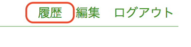
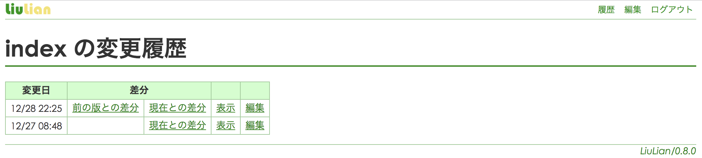

Git を利用してコンテンツを自動バックアップすることができます。
ます Git がインストールされているか確認します。
$ git --version
ユーザ情報が設定済みか確認します、
$ git config user.name $ git config user.email
未設定の場合、ユーザ情報を設定します*1。
$ git config --global user.name "Your Name" $ git config --global user.email your.name@example.com
起動時に指定したディレクトリに移動します。
$ cd ~/Documents/LiuLian/
配下のコンテンツ格納用ディレクトリに移動します。
$ cd docs
Gitでの管理を開始します。
$ git init
LiuLianを再起動するとコンテンツの自動バックアップを開始します。24時間以上更新がなかったファイルを更新しようとしたときにバックアップが行われます*2。
画面右上の 履歴 をクリックすると履歴画面が表示されます。

過去の版を参照し、その版を元にした編集をすることができます。 また、過去の版との差分を確認することもできます。 